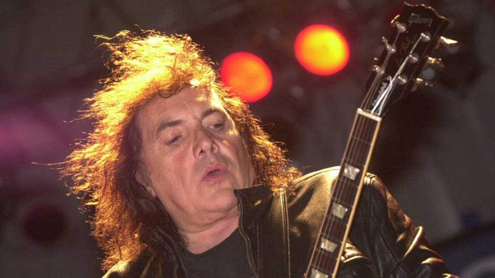

<div id="biografia" class="bodys">

<div class="containerBio">
<div class="imagesBio" id="leftImages">
    
    
    
    
    
</div>
<div class="cardBio">
    <h1>Biografía de la Banda</h1>
    <p>
        Dr. Malestar es una banda tributo que homenajea la trayectoria 
        completa de Norberto Anibal Napolitano PAPPO. <br>Esta fue formada 
        en 2013 en el barrio Texalar de Morón, zona oeste del Gran Buenos Aires. <br>
         Su primer show tuvo lugar el 2 de agosto de 2013 en Bendito Bar de Ituzaingó.
          A lo largo de su trayectoria, han compartido escenario con reconocidas bandas
           y artistas como Horcas, Tren Loco, Serpentor, Alejandro Medina y Vitico. <br>
           En 2014, se presentaron en la Plaza de Pappo junto a grandes bandas como Viticus y La Renga, 
           y también participaron en el primer tributo a Pappo en el Parque Avellaneda. 
      
        <br>
        La banda ha experimentado varias formaciones a lo largo de estos 12 años, <br> Actualmente Dr. Malestar está conformada por:
        <br>
        <b>Gus "El Negro" González</b> en voz y armónica <br>
        <b>Hugo "El Mosca" Fleitas</b> en batería <br>
        <b>Jor "El Moncho" Carrizo</b> en guitarra y coros <br>
        <b>Julio "El Tano" Macaroni</b> en guitarra y coros <br>
        <b>Héctor Bass</b> en bajo <br>
        Para más información y actualizaciones sobre la banda, puedes visitar sus sitios oficial..</p>
</div>
<div class="imagesBio" id="rightImages">
    
    
    
    
    
</div>
</div>

</div>